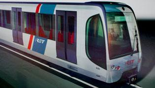
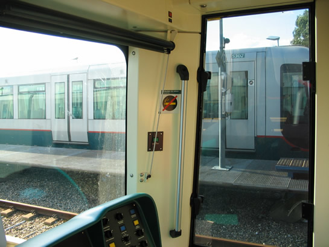
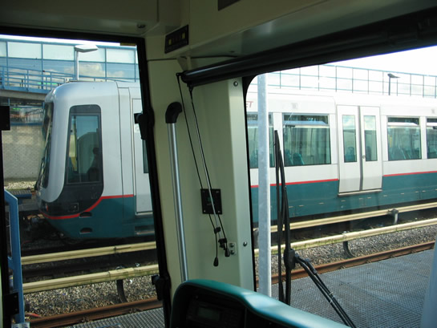
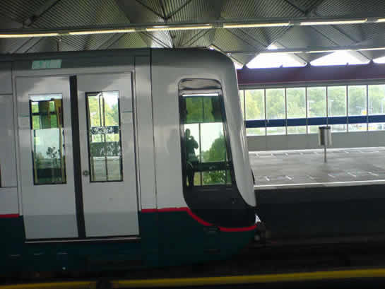
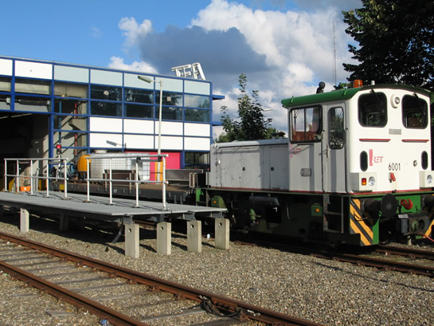

Nieuw metromaterieel besteld en meer nieuws...
- maandag 01 december 2008 10:49
- Geschreven door Simon
De RET gaat investeren in nieuw metro- en trammaterieel. Er zijn 54 nieuwe metrostellen besteld, waarvan er 11 op termijn kunnen worden ingezet op de Hoekse Lijn. Deze lijn zal in de toekomst door de RET geëxploiteerd worden en worden aangesloten op de Calandlijn, ter hoogte van station Schiedam Centrum. De rijtuigen zullen onder andere worden voorzien van airconditioning, stoffen bekleding en camerabewaking. Alle nieuwe rijtuigen zullen worden gebouwd conform de meest recente eisen op het gebied van brand- en botsveiligheid. Ook zal er veel aandacht worden geschonken aan de sociale veiligheid in de rijtuigen. Al eerder waren er 21 dubbelgelede rijtuigen besteld voor RandstadRail. De nieuwe metrorijtuigen zullen sterk op deze rijtuigen gaan lijken qua vorm.

Artist impression van een nieuw metrorijtuig. De vorm zal sterk lijken op de nog te leveren hogevloersrijtuigen voor RandstadRail.
Daarnaast zal de RET investeren in nieuw trammaterieel. Er is weer gekozen voor de fabrikant Alstom, die een nieuwe versie van de Citadis zal gaan produceren. Bij deze nieuwe versie zullen de problemen waar de huidige Citadistrams mee kampen niet aanwezig zijn. Er zijn 53 nieuwe lagevloertrams besteld, die op termijn bijna alle oude hogevloertrams zullen vervangen. De totale order betreft zo'n 300 miljoen euro en wordt gefinancieerd door de Stadsregio Rotterdam en de RET. Het is de bedoeling dat al het matereel in 2010 rijdt.
Rijtuigen met experimentele lichtfolie op de zijruiten
In het vorige nieuwsitem berichtten we over lichtfolie die is geplaatst op de zijruiten van de metrorijtuigen 5320 en 5349. De enquêtes zijn inmiddels afgenomen tussen 12 en 20 juli j.l., maar zullen na de bouwvakvakantie verder gaan. Onderstaande foto's geven een indruk van het verschil ten opzichte van de voorruit in rijtuig 5349. Het is nog niet bekend of in de toekomst meer ruiten worden voorzien van de folie. Wel zal het experiment worden uitgebreid naar rijtuigen uit de 5400-serie, de sneltramrijtuigen die meestal dienst doen op de Calandlijn. Ook daar zullen dan enquêtes bij plaatsvinden.

Geheel rechts is ruit nummer 3, deze is voorzien van 45% verduistering en aan de buitenkant voorzien van reflecterende folie.

De ruit geheel links is ruit nummer 2 met 35% verduistering.

Rijtuig 5349 op station Slinge, met uitzicht op de rechter ruit(nummer 3), die voorzien is van reflecterende folie.
Onkruidbestrijding op de Erasmuslijn
Deze week wordt er onkruid verwijderd langs de sporen van de Erasmuslijn. Dit wordt gedaan middels een platte werkwagen met daarop de bestrijdingsmiddelen, die wordt voortgetrokken door Gmeinder diesellocomotief nummer 6001.

Gmeinderlocomotief met platte werkwagen op lijnwerkplaats Waalhaven. De platte werkwagen is voorzien van onkruidbestrijdingsmiddelen.
RET blijft bij planning invoering OV-chipkaart
De strippenkaart zal als het aan de RET ligt niet meer te gebruiken zijn per 1 januari 2008. Per 1 oktober aanstaande moet de OV-chipkaart het enige betaalmiddel zijn bij de metro, en per 1 januari 2008 in alle trams en bussen van het bedrijf. RET-directeur Pedro Peters heeft onlangs op de redactie van het Algemeen Dagblad gesproken met drie lezers over de OV-chipkaart. Er zullen meer oplaadpunten komen voor de kaart, en ook zal de oplaadprocedure veranderd worden. Nu wordt eerst het bedrag van de betaalrekening afgeschreven en dan pas wordt het bedrag bijgeschreven op de OV-chipkaart, straks zal dit andersom gebeuren. Ook worden zo'n 100 tourniquets nog vervangen zodat ze beter zullen werken.
Revisie rijtuig 5244
Rijtuig 5244 is onlangs gereviseerd (R2) op lijnwerkplaats Waalhaven en is inmiddels weer in dienst.